نظام إدارة المخزون والمبيعات والحسابات للمحلات والشركات التجارية
دليل المستخدم المبسّط
الإصدار 1.0 — يعمل بدون إنترنت على جهازك
A product of
nuqtaWeb Studio
محتويات الدليل
1 البدء السريع
2 التعرّف على الشاشة
3 المخزون والمنتجات
4 أوامر الشراء
5 أوامر البيع
6 عروض الأسعار
7 الدفعات
8 المرتجعات وتعديل الفواتير
9 المالية والأرباح
10 الميزات الاختيارية
11 الإعدادات والنسخ الاحتياطي
12 أسئلة شائعة
فكرة البرنامج: تُسجّل ما تشتريه من الموردين وما تبيعه للعملاء، ويتولّى البرنامج حساب المخزون والتكلفة والأرباح والديون تلقائياً. كل بياناتك محفوظة على جهازك فقط.
1. البدء السريع
التثبيت والتشغيل
شغّل ملف التثبيت TradeOps-Setup واتبع الخطوات (لا يحتاج صلاحيات مدير). سيُنشئ اختصاراً على سطح المكتب.
افتح تريد أوبس من الاختصار. في أول مرة تظهر شاشة إنشاء حساب المدير (المالك): اكتب اسمك واسم المستخدم وكلمة مرور (6 أحرف على الأقل) ثم اضغط إنشاء حساب. احتفظ بكلمة المرور في مكان آمن.
بعد إنشاء الحساب تدخل مباشرة إلى لوحة التحكم، ولا يمكن إنشاء حساب مالك آخر من هذه الشاشة.
يتذكّر البرنامج تسجيل دخولك والفرع المختار بين مرة وأخرى، فلا تحتاج للدخول عند كل تشغيل. استخدم تسجيل الخروج إن كان غيرك يستعمل الجهاز.
ملاحظة: في ويندوز 10 قد يلزم برنامج Microsoft Edge WebView2 (موجود مسبقاً في ويندوز 11). إن لم يوجد يفتح البرنامج في المتصفح بدلاً من نافذته الخاصة ويعمل بشكل طبيعي.
الفترة التجريبية والتفعيل
للبرنامج فترة تجريبية 14 يوماً. بعدها يُقفل ما عدا تسجيل الدخول والنسخ الاحتياطي وصفحة الترخيص، ولا تُحذف أي بيانات. للتفعيل:
افتح صفحة الترخيص (من الشريط الأصفر أو من الإعدادات) وانسخ رمز الجهاز.
أرسله إلى الدعم الفني ليعطيك مفتاح التفعيل.
الصق المفتاح واضغط تفعيل. يعمل بدون إنترنت ولجهاز واحد.
نسيت كلمة المرور
من شاشة الدخول اختر نسيت كلمة المرور؟ فيظهر رمز طلب. أرسله مع اسم المستخدم إلى الدعم، ثم الصق رمز الاسترجاع الذي يصلك واختر كلمة مرور جديدة. يمكن أيضاً لأي مدير آخر إعادة تعيين كلمة مرور أي مستخدم من الإعدادات ← المستخدمون.
2. التعرّف على الشاشة
القائمة الجانبية على اليمين تنقلك بين الصفحات: لوحة التحكم، أوامر الشراء، عروض الأسعار، أوامر البيع، المالية، المخزون، الإعدادات. وتظهر صفحات إضافية (الصناديق، حسابات الجملة، الشركاء، السيارات) فقط عند تفعيل الميزة المقابلة من الإعدادات.
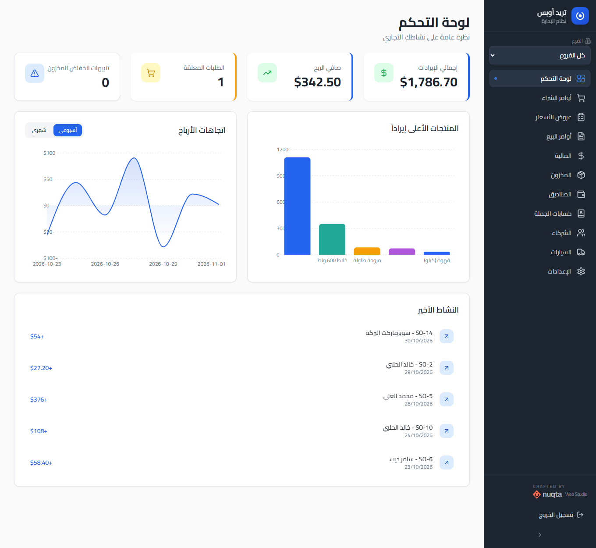
لوحة التحكم: الإيرادات وصافي الربح والطلبات المعلّقة وتنبيهات المخزون والمنتجات الأعلى إيراداً (بعد طرح المرتجعات).
الإضافة والبيع والشراء وتسجيل الدفعات والمصاريف والمرتجعات. لا يرى سعر التكلفة ولا الأرباح ولا قيمة المخزون، ولا يحذف، ولا يعدّل فاتورة منتهية.
نصيحة: أنشئ لكل موظف حساباً خاصاً من الإعدادات ← المستخدمون بدور «موظف».
التواريخ والأرقام
تظهر التواريخ بصيغة واحدة في كل البرنامج: 22/10/2026 (يوم/شهر/سنة). وتُعرض الأسعار بالدولار، ويظهر سعر التكلفة الصغير بأربع منازل عشرية (مثل $0.3333 للمتر).
3. المخزون والمنتجات
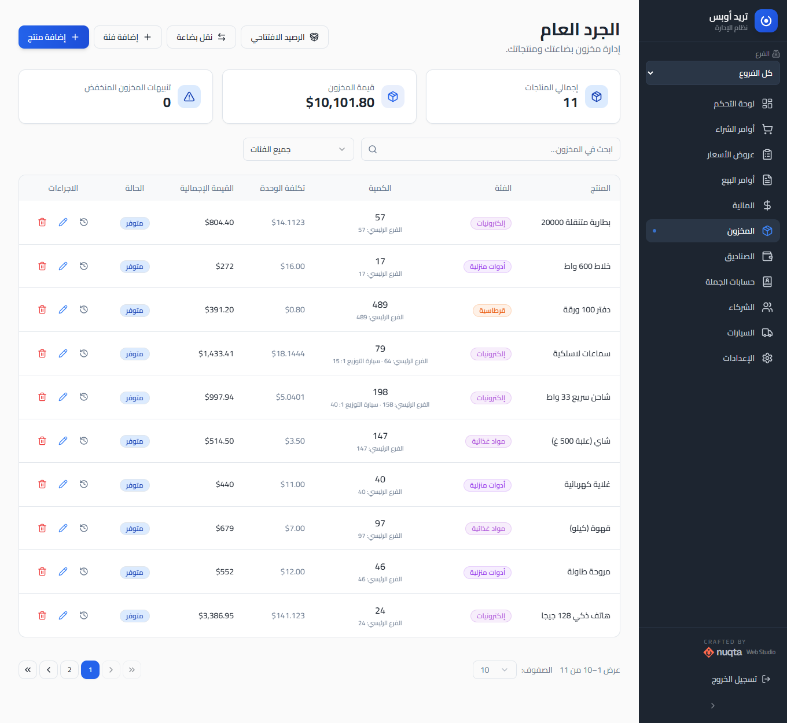
صفحة المخزون: الكمية في كل مكان، وتكلفة الوحدة والقيمة (للمدير)، وحالة كل منتج.
إضافة منتج
اضغط إضافة منتج واكتب الاسم واختر الفئة (أو أضف فئة جديدة من إضافة فئة).
أدخل الكمية الموجودة الآن وتكلفة الوحدة وسعر البيع ومستوى إعادة الطلب (عند وصول الكمية إليه يظهر تنبيه «مخزون منخفض»).
اضغط أضف إلى المخزون.
الرصيد الافتتاحي
إن أدخلت كمية مع المنتج الجديد يسألك البرنامج عن دفع ثمنها:
دُفعت الآن من الصندوق: يقترح المبلغ (الكمية × التكلفة) ويمكنك تغييره أو الدفع بالليرة. يخرج المبلغ من الصندوق ويظهر في المالية كـ«شراء بضاعة» (لا يُنقص الربح: يدخل كتكلفة عند البيع).
بضاعة قديمة (بدون دفع الآن): لا يخرج شيء من الصندوق.
في الحالتين المورد اختياري. افتح الرصيد الافتتاحي لترى كل ذلك: دفع من الصندوق لبضاعة قديمة دفعت ثمنها لاحقاً، وربط بمورد متى عرفته: يتحوّل الرصيد إلى أمر شراء مستلم في حساب المورد، وإن كان مدفوعاً من الصندوق ينتقل الدفع معه فلا يبقى عليك شيء ولا يُحسب المال مرتين، ولا تُضاف البضاعة للمخزون مرة ثانية.
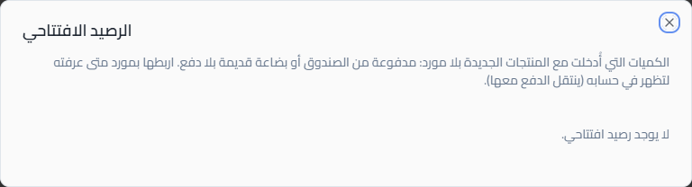
الرصيد الافتتاحي: ما أُدخل مع المنتجات الجديدة، دفعه من الصندوق، وربطه بالمورد.
البيع بالكسور (مثل الكابل بالمتر)
فعّل خيار «يُباع بالكسور» واكتب وحدة القياس (متر، كغ…). عندها تستطيع إدخال كميات مثل 3.5 في الشراء والبيع والنقل.
تصحيح الجرد وحركة المخزون
لتصحيح كمية (جرد، قطعة تالفة…) عدّل المنتج وغيّر الكمية، ويطلب البرنامج سبب التعديل. كل تغيير في المخزون محفوظ: اضغط أيقونة الساعة بجانب المنتج لترى حركة المخزون: الشراء والبيع والنقل والمرتجعات والتصحيحات، ومكان كل حركة والرصيد بعدها.
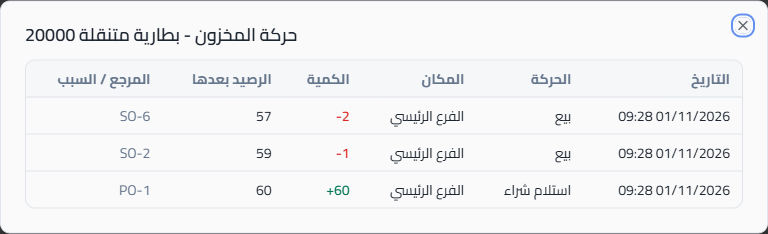
حركة المخزون لمنتج واحد.
انتبه: لا تستخدم تصحيح الجرد لتسجيل مشتريات؛ المشتريات تتم عبر أمر شراء حتى تُحسب التكلفة والدين للمورد.
4. أوامر الشراء
أمر الشراء هو ما تطلبه من المورد. يُحسب ديناً للمورد من يوم إنشائه، أما المخزون فلا يتغيّر إلا عند الاستلام.
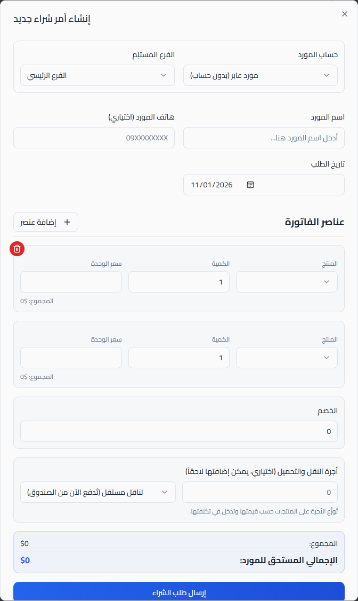
أمر الشراء: المنتجات بأسعارها، الخصم، أجرة النقل، والإجمالي المستحق للمورد.
إنشاء أمر شراء
اضغط إضافة أمر شراء، اختر حساب المورد (أو «مورد عابر» واكتب اسمه وهاتفه)، والتاريخ.
أضف المنتجات: يُملأ سعر الوحدة تلقائياً بآخر سعر شراء ويمكنك تعديله. يظهر مجموع كل بند والإجمالي أسفل النموذج.
أضف الخصم إن وُجد، وأجرة النقل والتحميل إن عرفتها (اختيارية ويمكن إضافتها لاحقاً).
أجرة النقل والتحميل
اختر لمن تُدفع الأجرة في كل أمر:
لناقل مستقل: تخرج الآن من الصندوق (بالدولار أو بالليرة) كمصروف «أجرة نقل مشتريات».
على فاتورة المورد: تُضاف إلى ما ندين به للمورد.
في الحالتين تُوزَّع الأجرة على منتجات الأمر حسب قيمتها وتدخل في تكلفتها. لإضافتها أو تعديلها بعد الاستلام اضغط أيقونة الشاحنة على الأمر.
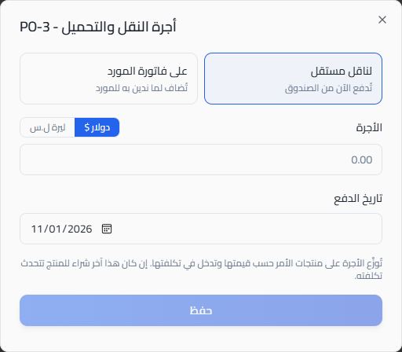
أجرة النقل: لناقل مستقل أو على فاتورة المورد.
الاستلام (كامل أو جزئي)
عند وصول البضاعة اضغط استلام البضاعة (✓ البرتقالية).
أدخل الكمية التي وصلت فعلاً من كل منتج، واختر أين وصلت: فرع أو سيارة مباشرة.
إن بقي شيء يصبح الأمر «مستلم جزئياً» وتستلم الباقي لاحقاً.
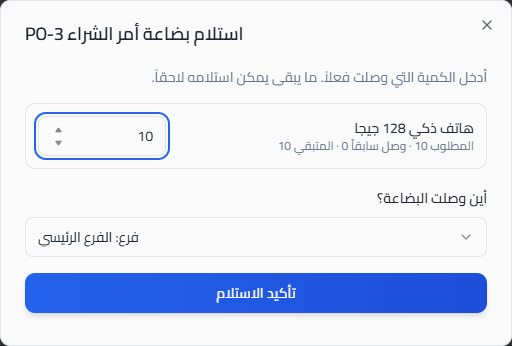
استلام البضاعة: الكمية الواصلة والمكان.
كيف تُحسب تكلفة المنتج؟
تكلفة المنتج = آخر سعر شراء له، بعد حصته من خصم الأمر وأجرة النقل. مثال: 10 قطع بـ 100$ وخصم 50$ وأجرة 30$ على أمر قيمته 1000$ ← تكلفة القطعة 98$. تظهر «التكلفة الفعلية» لكل بند في تفاصيل الأمر (أيقونة العين).
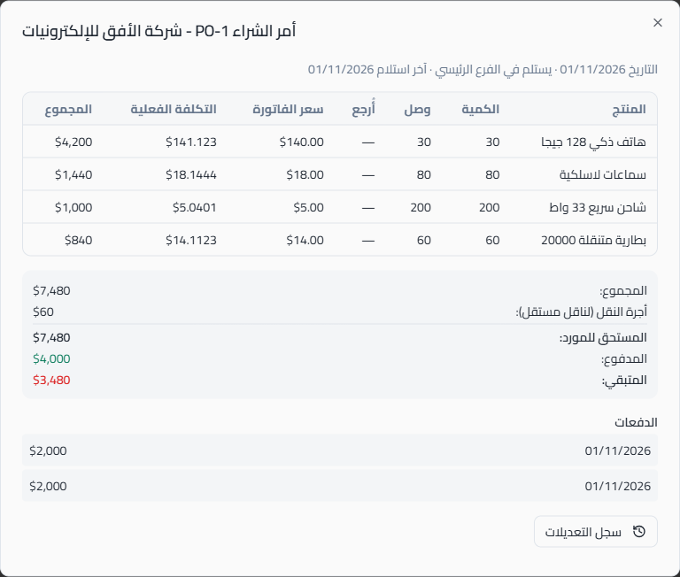
تفاصيل أمر الشراء: المستلم والمرتجع والتكلفة الفعلية لكل بند، والمستحق والمدفوع والمتبقي.
التعديل والإلغاء والحذف
الأمر «قيد الانتظار» يُعدَّل ويُلغى ويُحذف بحرية. إن كان عليه دفعات يسألك البرنامج: هل استرددت المبلغ من المورد (يعود للصندوق) أم يبقى رصيداً لنا عنده يُخصم من أوامره القادمة.
الأمر المستلم يعدّله المدير فقط (انظر قسم 8). لإعادة بضاعة للمورد استخدم المرتجع.
5. أوامر البيع
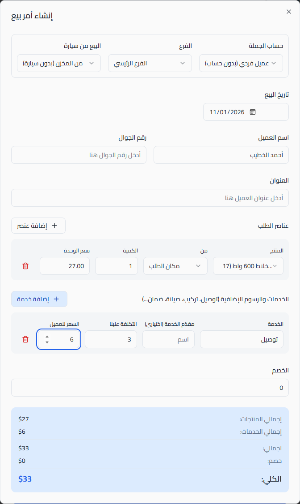
أمر البيع: لكل بند مكان يخرج منه (عمود «من»)، والسعر والكمية، وأسفلها الخدمات (اسم حر، مقدّم الخدمة، التكلفة علينا، السعر للعميل).
إنشاء أمر بيع
اضغط إنشاء أمر بيع. اختر تاريخ البيع (اليوم افتراضياً؛ يمكنك اختيار تاريخ سابق لفاتورة تأخر إدخالها) وأدخل بيانات العميل.
إضافة عنصر: اختر المنتج (يظهر المتوفر بجانب اسمه) والكمية والسعر. السعر الافتراضي هو سعر البيع (أو سعر الجملة لعميل الجملة).
عمود «من» (مع تفعيل الفروع أو السيارات): كل بند يخرج من مكانه الخاص؛ «مكان الطلب» يعني الفرع أو السيارة المختارة أعلى الطلب. مثال: منتج من السيارة ومنتج آخر من المخزن في الطلب نفسه.
إضافة خدمة لأي خدمة أو رسم إضافي (توصيل، تركيب، صيانة، ضمان، تغليف…): اكتب اسم الخدمة بحرية أو اختره من الاقتراحات (تظهر الأسماء التي استخدمتها سابقاً)، ثم مقدّم الخدمة (اختياري)، والتكلفة علينا (اتركها 0 إن كان الرسم خالصاً لك)، والسعر للعميل، ثم الخصم وإنشاء طلب مبيعات.
تنبيه السعر: إن كان السعر صفراً أو (للمدير) أقل من التكلفة يظهر تنبيه تحت البند، ولا يمنعك من الحفظ.
بطاقة الطلب
تعرض كل بطاقة التاريخ والمدفوع والمتبقي وحالة الدفع (مدفوع / جزئي / غير مدفوع)، والمجموع بعد المرتجعات.
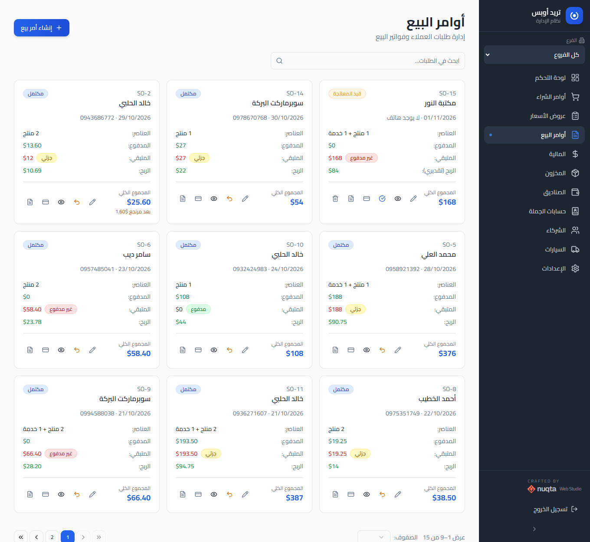
بطاقات أوامر البيع.
إنهاء الأمر
الأمر «قيد المعالجة» لا يؤثر على المخزون. عند إنهاء (✓ الخضراء) يُخصم كل بند من مكانه ويُسجَّل البيع بتاريخه وتُحفظ تكلفة البضاعة لحساب الربح. إن لم تتوفر الكمية في مكان ما يظهر السبب ولا يتغير شيء.
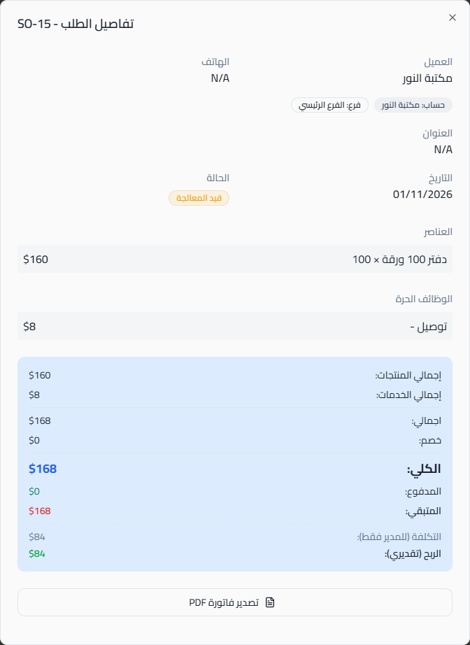
تفاصيل الطلب: البنود ومن أين خرجت، والمرتجعات، والمدفوع والمتبقي، والربح للمدير.
الفاتورة
من أيقونة الفاتورة اضغط تصدير فاتورة PDF ثم طباعة / حفظ PDF. تُطبع المدفوعات والمتبقي والمرتجعات إن وُجدت، ويظهر اسم محلك وهواتفه من الإعدادات ← بيانات الشركة.
حذف طلب
للمدير فقط. إن كان على الطلب دفعات يسألك: أعدنا المبلغ للعميل (يخرج من الصندوق) أم يبقى رصيداً له في حسابه. الطلب الذي عليه مرتجعات يُحذف بعد حذف مرتجعاته.
6. عروض الأسعار
عرض السعر هو ورقة تقدّمها للعميل قبل أن يقرر الشراء. تشبه أمر البيع، لكنها لا تؤثر على المخزون ولا على المالية إطلاقاً. فإذا وافق العميل تحوّلها بضغطة واحدة إلى أمر بيع جديد.
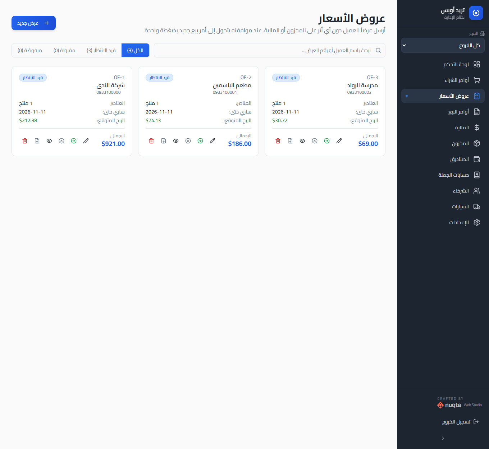
صفحة عروض الأسعار: حالة كل عرض (قيد الانتظار، مقبول، مرفوض، منتهي) وإجماليه.
إنشاء عرض
من القائمة الجانبية افتح عروض الأسعار واضغط عرض جديد.
اكتب بيانات العميل، وأضف المنتجات والخدمات والخصم، واختر «ساري حتى» وأضف ملاحظات إن أردت.
اضغط إنشاء العرض. بإمكانك تعديله ما دام «قيد الانتظار».
إرسال العرض وقبوله
طباعة / PDF: أيقونة الملف. واتساب: أيقونة واتساب مع إمكانية تعديل الرسالة قبل الإرسال.
عندما يوافق العميل اضغط قبول العرض ثم نعم، أنشئ أمر البيع: يُنشأ أمر بيع جديد بالبنود نفسها، ويصبح العرض «مقبولاً» ومقفلاً. المخزون لا يتغير إلا عند إنهاء أمر البيع.
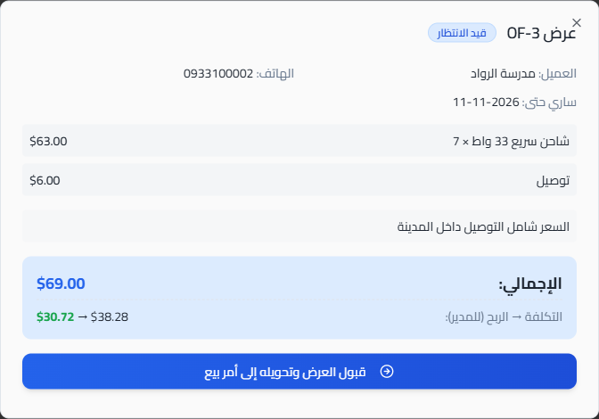
تفاصيل العرض: البنود والخدمات والإجمالي، وزر قبوله وتحويله إلى أمر بيع.
ملاحظات: العرض المنتهي الصلاحية لا يُقبل حتى تعدّل تاريخ «ساري حتى». ويمكنك رفض العرض ثم إعادة فتحه. ويرى المدير الربح المتوقع على كل عرض.
7. الدفعات
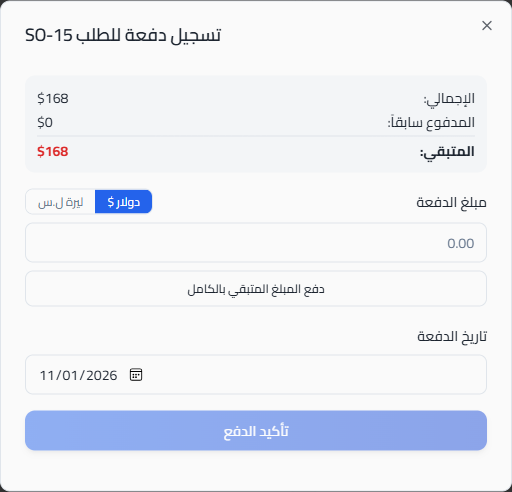
نافذة الدفعة: الإجمالي والمدفوع سابقاً والمتبقي، بالدولار أو بالليرة.
اضغط أيقونة الدفع على الأمر، اكتب المبلغ أو اضغط دفع المبلغ المتبقي بالكامل، واختر تاريخ الدفعة (اليوم افتراضياً)، ثم تأكيد الدفع.
يمنع البرنامج تجاوز المتبقي، ولا يسمح بتعديل فاتورة لتصبح أقل مما دُفع عليها.
مع تفعيل الصناديق يظهر مفتاح دولار / ليرة: اكتب المبلغ بالليرة وسعر الصرف فيُحسب المقابل بالدولار.
دفعة العميل تدخل صندوق عملتها، ودفعة المورد تخرج منه.
تنبيه الصندوق: إن خرج مبلغ (مصروف، دفعة لمورد، سحب شريك…) أكبر مما في الصندوق، يُحفظ ولكن يظهر تنبيه أحمر بأن الصندوق أصبح سالباً، لتتأكد من الرصيد الفعلي.
الدفعات المجمّعة ورصيد الحساب
لعملاء الجملة والموردين: من صفحة حسابات الجملة سجّل دفعة واحدة كبيرة فتُوزَّع تلقائياً على أقدم الفواتير غير المسددة، وما زاد يبقى رصيداً للحساب ويُخصم تلقائياً من فواتيره القادمة.
8. المرتجعات وتعديل الفواتير
مرتجع من العميل
على بطاقة طلب منتهٍ اضغط أيقونة المرتجع (السهم البرتقالي).
أدخل الكمية المرتجعة من كل منتج، واختر أين تعود (افتراضياً المكان الذي خرجت منه)، والتاريخ وملاحظة.
إن كان العميل قد دفع أكثر من قيمة الطلب بعد المرتجع يسألك: نعيده له نقداً (يخرج من الصندوق) أم يبقى رصيداً له في حسابه.
تعود البضاعة للمخزون، وينقص الإيراد وتكلفة البضاعة والربح في يوم المرتجع، وينقص ما على العميل.
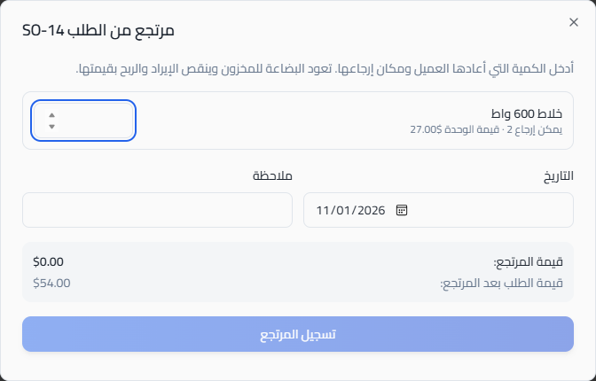
مرتجع من العميل.
مرتجع إلى المورد
على أمر شراء مستلم اضغط مرتجع إلى المورد، وأدخل الكمية والمكان الذي تخرج منه. ينقص ما ندين به للمورد بقيمتها (بعد حصة الخصم). وإن كنا دفعنا أكثر: نسترده نقداً أو يبقى رصيداً لنا عنده.
تعديل فاتورة منتهية أو أمر مستلم (للمدير)
طلب بيع منتهٍ: اضغط القلم. عند الحفظ تعود الكميات القديمة للمخزون وتخرج الجديدة، ويتعدل الحساب والربح. المنتجات المباعة سابقاً تحتفظ بتكلفتها.
أمر شراء مستلم: يمكن تعديل الأسعار والخصم والمورد وزيادة الكميات أو إضافة بنود، ولا يمكن إنقاص كمية عمّا وصل (استخدم المرتجع). تتحدث تكلفة المنتجات تلقائياً.
كل تعديل يُسجَّل في سجل التعديلات (من نافذة التفاصيل): مَن عدّل، ومتى، وما كان قبل وبعد.
ملاحظة: لا يمكن تعديل أو حذف فاتورة داخل شهر مُقفل مع الشركاء إلا بعد التراجع عن الإقفال.
9. المالية والأرباح
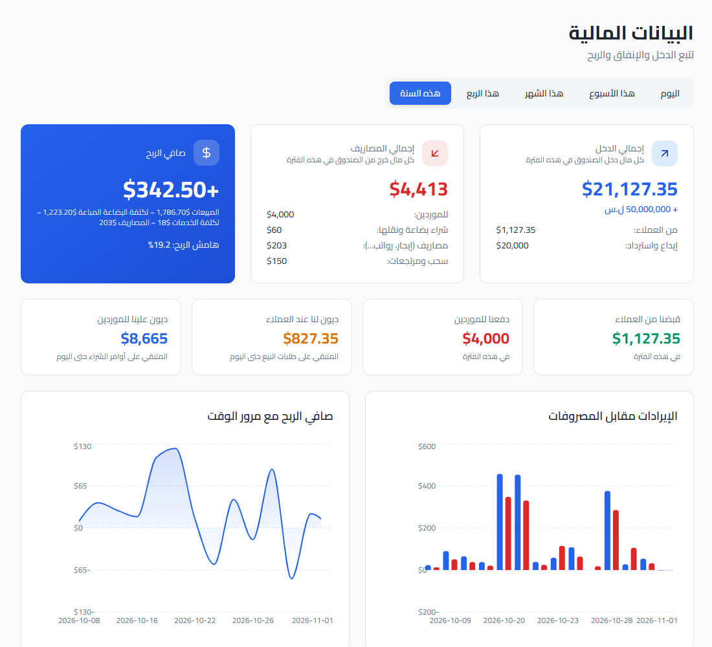
صفحة المالية: اختر الفترة لترى الدخل والمصاريف وصافي الربح، والنقد المقبوض والمدفوع، والديون.
الفترات تقويمية: اليوم، هذا الأسبوع (يبدأ السبت)، هذا الشهر، هذا الربع، هذه السنة.
إجمالي الدخل: كل مال دخل الصندوق في الفترة (من العملاء، إيرادات أخرى، إيداع واسترداد)، والليرة تحته إن وُجدت.
إجمالي المصاريف: كل مال خرج من الصندوق (للموردين، شراء بضاعة ونقلها، المصاريف، السحب والمرتجعات). تحويل العملة بين الصندوقين لا يُحسب دخلاً ولا مصروفاً.
صافي الربح: الربح الحقيقي (طريقة حسابه أدناه)، لذلك لا يساوي الدخل ناقص المصاريف: البضاعة تُحسب في الربح عند بيعها لا عند شرائها.
كيف يُحسب الربح؟
الإيراد
أوامر البيع عند إنهائها (بعد الخصم) − المرتجعات + أي دخل آخر.
تكلفة البضاعة
الكمية × تكلفة المنتج لحظة البيع (آخر سعر شراء مع حصة الخصم والنقل) − تكلفة المرتجع.
تكلفة الخدمات
ما تدفعه لمقدّمي الخدمات (توصيل، تركيب…) في الأوامر المنتهية.
المصاريف التشغيلية
الإيجار والكهرباء والرواتب… التي تسجلها بنفسك.
صافي الربح
الإيراد − تكلفة البضاعة − تكلفة الخدمات − المصاريف التشغيلية.
النقد والديون
قبضنا من العملاء / دفعنا للموردين: المال الذي تحرّك فعلاً في الفترة.
ديون لنا عند العملاء / ديون علينا للموردين: المتبقي حتى اليوم على كل الطلبات.
شراء بضاعة ونقلها: خروج نقدي لا يُخصم من الربح (التكلفة تدخل الربح عند البيع).
آخر الحركات المالية
آخر 5 حركات دخلت الصندوق أو خرجت منه (دفعات، مصروفات، إيرادات، شراء بضاعة...). صفِّها بـ الدخل أو المصروف. القائمة الكاملة للمصروفات والإيرادات في الأسفل (بصفحات)، وكل حركة الصندوق في صفحة الصناديق.
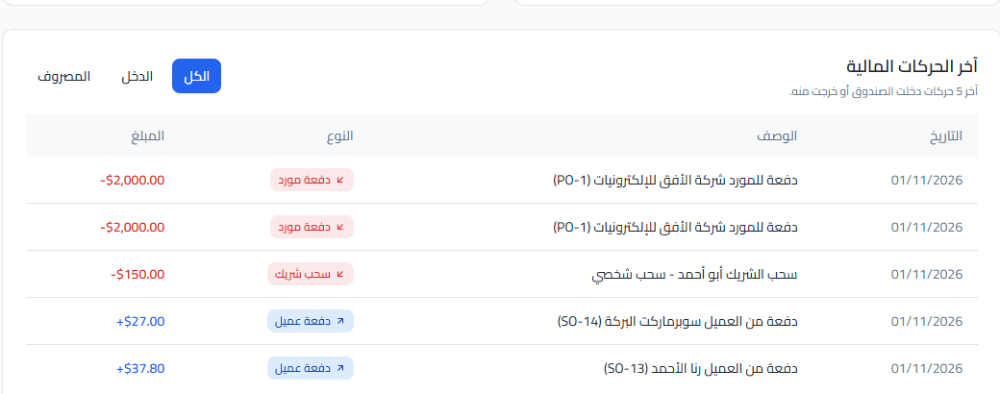
آخر 5 حركات مالية.
تسجيل مصروف أو إيراد
اضغط إضافة مصروف أو إيراد واختر مصروف (يخرج من الصندوق) أو إيراد (يدخل الصندوق، مثل بيع خردة)، ثم اكتب الوصف والفئة والمبلغ والتاريخ. يمكن لأي مستخدم الإضافة، والحذف للمدير. أجرة النقل المرتبطة بأمر شراء تُعدَّل من أمر الشراء نفسه، ودفع ثمن الرصيد الافتتاحي من «الرصيد الافتتاحي».
للموظف: يرى الإيراد والمصاريف والنقد والديون، ولا يرى تكلفة البضاعة ولا صافي الربح ولا الرسوم البيانية للربح.
10. الميزات الاختيارية
من الإعدادات ← الميزات الاختيارية (للمدير) فعّل ما يناسب محلك. كل ميزة مستقلة، وإيقافها يخفيها فقط دون حذف أي بيانات.
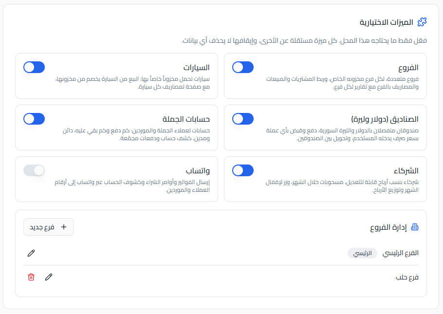
مفاتيح الميزات الاختيارية: المفتاح الأزرق يعني أن الميزة مفعّلة.
🏬 الفروع ونقل البضاعة
أضف فروعك من الإعدادات ← إدارة الفروع. لكل فرع مخزونه الخاص، ويظهر اختيار الفرع أعلى القائمة الجانبية لقصر القوائم والتقارير عليه.
نقل بضاعة من المخزون: اختر المصدر والوجهة ثم أضف عدة منتجات بكمياتها (منتج آخر). يُنقل الكل معاً أو لا شيء إن نقصت كمية، ويظهر المتوفر و«بعد النقل» لكل منتج.
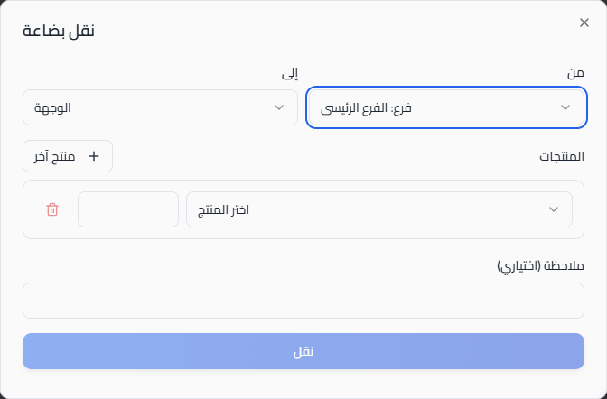
نقل عدة منتجات دفعة واحدة.
🚚 السيارات
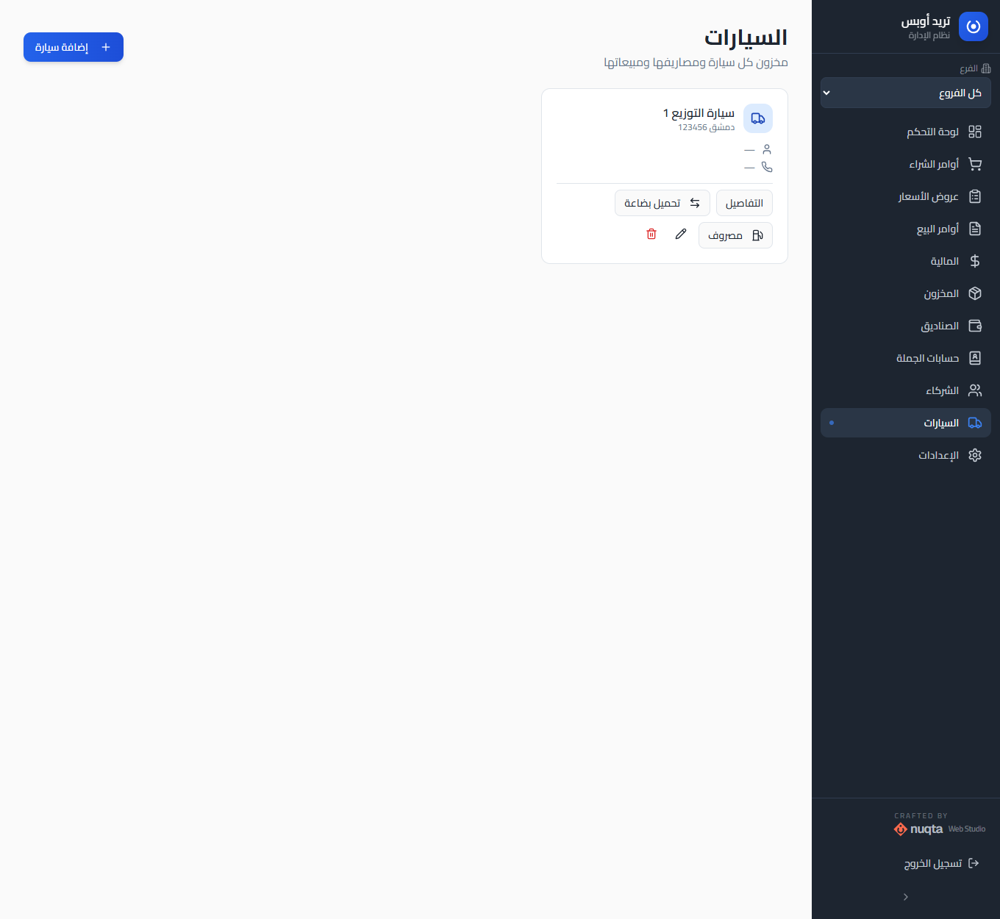
صفحة السيارات: لكل سيارة سائق ومخزون ومصاريف ومبيعات.
أضف السيارة (الاسم، اللوحة، السائق)، وحمّلها بـ تحميل بضاعة أو استلم أمر شراء مباشرة إليها.
في أمر البيع اختر «البيع من سيارة» للطلب كله، أو اختر مكان كل بند من عمود «من».
مصروف للوقود والصيانة. تفاصيل السيارة تعرض مخزونها ومصاريفها ومبيعاتها (ما خرج منها فعلاً بعد المرتجعات).
💵 الصناديق (دولار وليرة)
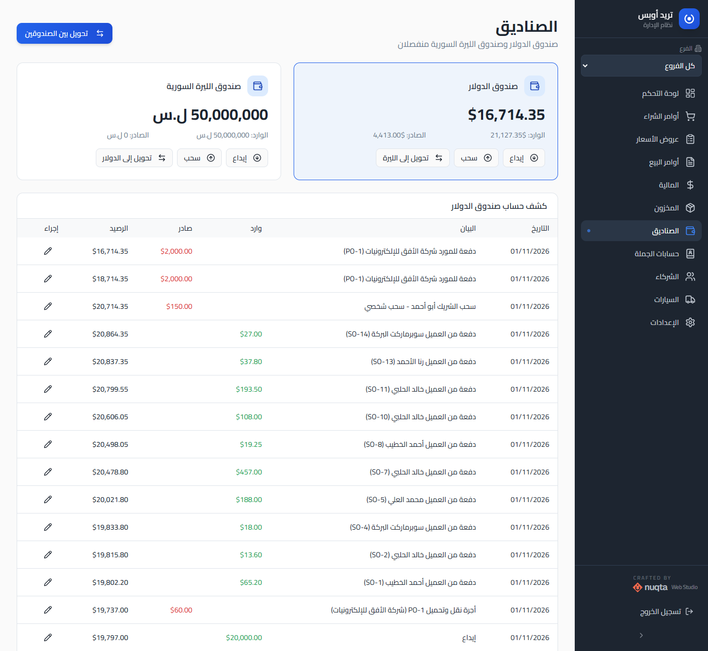
صندوق الدولار وصندوق الليرة، مع كشف حساب لكل صندوق مرتّب حسب وقت الإدخال.
صندوقان منفصلان. ابدأ بـ إيداع لرصيدك الافتتاحي، وسحب للسحب اليدوي، وتحويل بين الصندوقين بسعر صرف تكتبه.
الدفعة المجمّعة لحساب جملة تظهر سطراً واحداً بمبلغها كاملاً مع الطلبات التي سدّدتها.
إن أصبح صندوق سالباً بسبب مبلغ خارج يظهر تنبيه ولا يُمنع الحفظ. الصفحة للمدير فقط.
ملاحظة: المحاسبة دائماً بالدولار؛ ما يُدفع بالليرة يُحوَّل بسعر الصرف الذي كتبته وقت الدفع.
📒 حسابات الجملة
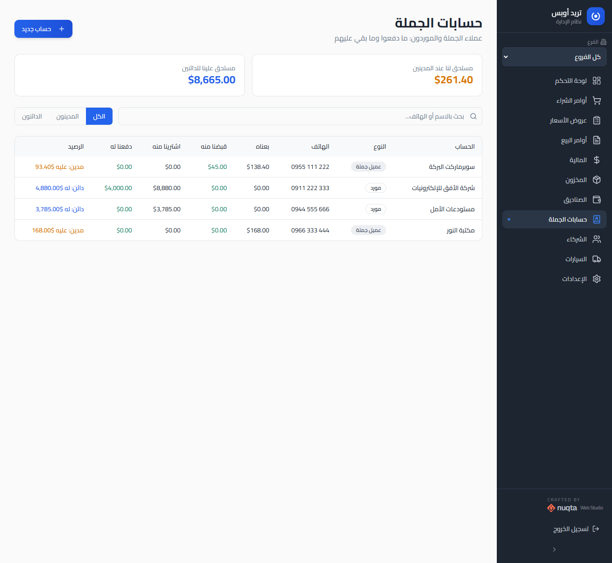
كشف حساب المورد: الفواتير غير المسددة، والحركات من الأقدم للأحدث مع الرصيد بعد كل حركة.
أنشئ حساباً لعميل الجملة أو المورد (أو كليهما) مع رصيد افتتاحي إن وُجد. القائمة تعرض: بعناه، قبضنا منه، اشترينا منه، دفعنا له، والرصيد (عليه لنا أو له عندنا).
كل فاتورة تُحسب في الحساب من يوم إنشائها؛ أمر الشراء غير المستلم يظهر «لم يُستلم بعد» وطلب البيع غير المنتهي «لم تُنهَ بعد».
افتح الحساب لترى الفواتير غير المسددة (الإجمالي، المدفوع، المتبقي) وكشف الحساب مع المجموع.
استلام دفعة / دفع للمورد: دفعة مجمّعة بتاريخها تُوزَّع على أقدم الفواتير، وتظهر في الكشف أيّ الفواتير سدّدت.
قيد يدوي (للمدير)، وكشف حساب عبر واتساب يتضمن الفواتير غير المسددة.
عند إعداد الصفحة لأول مرة، اضغط أرباح قبل استخدام البرنامج وأدخل لكل شريك صافي ربحه الخاص حتى تاريخ معيّن (الخسارة بإشارة سالبة) وما سحبه قبل البرنامج. لا يوجد مجموع عام ولا تُستخدم النسب هنا، ويمكن إضافة شريك جديد في أي وقت. يُضاف ذلك إلى أرصدة الشركاء ولا يغيّر الصندوق أو ربح الفترة الحالية. يمكن تصحيحه عبر تعديل رصيد البداية قبل أول إقفال.
لتسجيل أرباح الشريك السابقة شهراً بشهر (أو لأي فترة)، افتح تفاصيل الشريك واستخدم قسم أرباح الشريك قبل استخدام البرنامج: اكتب بداية الفترة (اختياري) ونهايتها ومبلغ ربحه وملاحظة، ثم إضافة ربح سابق. كل سطر يظهر منفصلاً ويمكن تعديله أو حذفه، ويدخل في رصيد الشريك دون أي أثر على الصندوق.
سجّل ما يأخذه الشريك من تسجيل سحب: سلفة من حصته لا تؤثر على ربح المحل.
في نهاية الشهر اضغط إقفال الشهر وتوزيع الأرباح: معاينة ثم إقفال وتوزيع. يمكن التراجع عن آخر إقفال.
انتبه: يجب أن تنتهي الفترة قبل اليوم. الفترات المقفلة محمية من المصاريف والمرتجعات والتعديلات بتاريخ داخلها.
💬 واتساب
فعّل الميزة ثم الإعدادات ← ربط واتساب: اربط رقم المحل برمز الاقتران أو بمسح رمز QR، واضبط رمز الدولة (سوريا 963).
أيقونة واتساب على الطلبات والعروض وكشوف الحساب تفتح نافذة مراجعة للرقم والنص قبل الإرسال، ومع تعذّر الإرسال المباشر تفتح محادثة جاهزة.
مجموعة التقارير: اضغط تحميل المجموعات واختر مجموعة (مثل مجموعة الشركاء) يكون رقم المحل عضواً فيها. فعّل إرسال كل عملية بيع عند إنهائها، واضغط إرسال ملخص اليوم الآن لإرسال مبيعات اليوم والربح والنقد والديون والمخزون المنخفض.
ملاحظة: واتساب يحتاج إنترنت ومكوّن «دعم واتساب» عند التثبيت. استخدمه بحجم معقول حتى لا يُحظر الرقم.
11. الإعدادات والنسخ الاحتياطي
بيانات الشركة والمستخدمون
اكتب اسم المحل وهواتفه وعنوانه لتظهر على الفواتير. وللمدير: إضافة المستخدمين وتحديد دورهم وتعطيلهم وإعادة تعيين كلمات مرورهم (لا يُحذف آخر مدير).
النسخ الاحتياطي والاستعادة
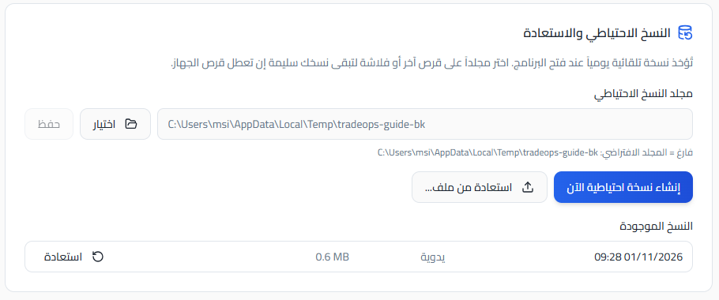
اختيار مجلد النسخ، النسخ الآن، والاستعادة.
تلقائي: نسخة يومية عند فتح البرنامج (آخر 14 نسخة).
مجلد النسخ: اضغط اختيار وحدد مجلداً على قرص آخر أو فلاشة ثم حفظ. تُحفظ فيه النسخ اليدوية، وتُنسخ إليه النسخة التلقائية اليومية أيضاً. إن كانت الفلاشة غير موصولة تُحفظ النسخة مؤقتاً في المجلد الافتراضي.
يدوي:إنشاء نسخة احتياطية الآن.
الاستعادة: من قائمة النسخ الموجودة اضغط استعادة، أو استعادة من ملف... لاختيار ملف نسخة. يحفظ البرنامج أولاً نسخة من بياناتك الحالية، ثم يستبدلها ويعود لصفحة الدخول.
انتبه: الاستعادة تستبدل كل البيانات الحالية بالنسخة المختارة. النسخة المحفوظة قبل الاستعادة تجدها في القائمة باسم before-restore إن احتجت للرجوع.
التحديث إلى إصدار جديد
شغّل ملف التثبيت الجديد فوق القديم: يُحدَّث البرنامج فقط، وتبقى بياناتك ومستخدموك وترخيصك كما هي، وتُرقّى قاعدة البيانات تلقائياً بعد نسخة احتياطية.
أين بياناتي؟ في %LOCALAPPDATA%\TradeOps. عند الحاجة للدعم أرسل ملف logs radeops.log.
12. أسئلة شائعة
السؤال
الجواب
لماذا لا ينقص المخزون بعد إنشاء أمر البيع؟
يُخصم عند إنهاء الأمر وليس عند إنشائه.
أريد تعديل طلب منتهٍ.
المدير يعدّله بالقلم وتتعدل الكميات والحساب تلقائياً، ويُسجَّل التعديل. أو استخدم المرتجع إن أعاد العميل بضاعة.
ظهر «المخزون غير كافٍ».
الكمية أكبر من المتوفر في مكان البند (فرع أو سيارة). انقل بضاعة إليه أو غيّر «من».
لماذا تغيّرت تكلفة المنتج بعد الاستلام؟
التكلفة = آخر سعر شراء مع حصته من الخصم وأجرة النقل.
حساب المورد يُظهر ديناً لأمر لم يصل بعد.
صحيح: الأمر دين من يوم إنشائه. ألغِه إن لم يعد مطلوباً.
أدخلت منتجاً بكمية؛ لماذا لم يخرج مال من الصندوق؟
اخترت «بضاعة قديمة (بدون دفع)». إن دفعت ثمنها اضغط «دفع من الصندوق» في «الرصيد الافتتاحي»، أو اربطها بالمورد إن كان عليك ثمنها.
ظهر تنبيه أن الصندوق سالب.
خرج مبلغ أكبر مما سجّلته في الصندوق. أضف رصيدك الافتتاحي من إيداع أو راجع المبلغ.
الموظف لا يرى الأرباح والتكلفة.
هذا مقصود: الأرباح وأسعار التكلفة للمدير فقط.
لا يقبل الإقفال: «مجموع النسب».
اجعل مجموع نسب الشركاء الفعّالين 100%.
أيقونة واتساب لا ترسل مباشرة.
تأكد من ربط الرقم في الإعدادات؛ إن ظهرت حالة «غير مربوط» فامسح الرمز من واتساب ← الأجهزة المرتبطة.
عادات تحفظ لك وقتك:
سجّل المشتريات عبر أوامر الشراء واستلمها عند وصولها، وأضف أجرة النقل لتبقى التكلفة صحيحة.
أنهِ أوامر البيع يومياً ليظهر الربح الفعلي.
اختر مجلد نسخ على فلاشة وخذ نسخة يدوية أسبوعياً.
أقفِل الشهر مع الشركاء في أول يوم من الشهر التالي.
تريد أوبس — الإصدار 1.0 — للدعم الفني تواصل مع مزوّد البرنامج
تريد أوبس هو منتج من
nuqta
نقطة
Web Studio · ستوديو ويب
نقطة ستوديو ويب من شخصين يبني المتاجر ومواقع الحجز وأنظمة ERP والهويات البصرية وتطبيقات الجوال.
Nuqta is a two-person web studio building storefronts, booking sites, ERP systems, brand identities and mobile apps.